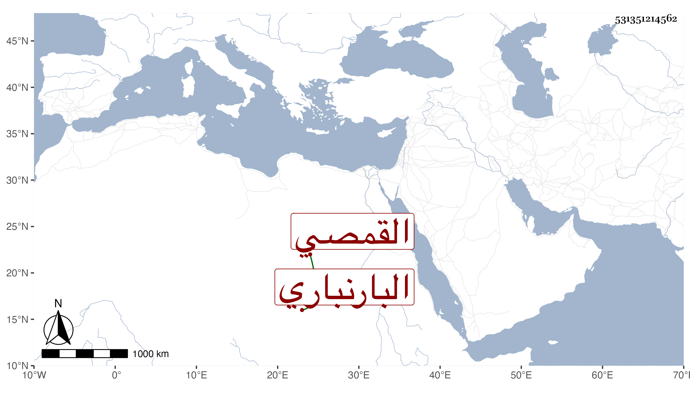

0902Sakhawi.DawLamic.ITO20230111-ara1.EIS1600.531351214562
Biography ID: 531351214562
أحمد بن عبد الرحمن بن أحمد بن عبد الرحمن الشهاب أبو محمد بن البهاء بن الشهاب القمصي البارنباري وبارنبار مقابل منية القمص وهي أعظم منها القاهري الشافعي والد الجلال عبد الرحمن الآتي . كان أبوه من أصحاب عبد العال خليفة الشيخ أحمد البدوي ممن يذكر بالكرامات والأحوال وله ببلده منية القمص زاوية أنشأها وولد له صاحب الترجمة بها قريبا من سنة خمسين وسبعمائة فيما أخبرني به ولده والأشبه أن يكون بعد ليناسب تاريخ عرضه فحفظ القرآن والمنهاجين الفرعي والأصلي وغيرها وعرض في سنة خمس وثمانين وسبعمائة على الأبناسي ووصف والده بالشيخ الصالح الزاهد العابد المربي الناسك السالك كهف الفقراء والمساكين الشيخ بهاء الدين بن الشيخ الصالح شهاب الدين البارنباري ، وكذا عرض على ابن الملقن وإسماعيل بن إبراهيم بن عبد الرحمن بن إبراهيم بن سعد الله بن جماعة وقال أولهما أنه سمع عليه قبل ذلك دروسا فيه وقرأ عليه بعضه بحثا وكتب شرحه له أي المنهاج الفرعي بكماله والصدر الأبشيطي والجمال الأسنوي والشهاب بن النقيب والبهاء أحمد بن التقي السبكي ومحمد بن عبد البر السبكي والبدر حسن بن العلاء القونوي وأكمل الدين الحنفي والسراج الهندي وآخرين ، ووصف كلهم والده بالولاية والصلاح ورأيت خط الكمال الدميري على الجزء الأخير من شرحه للمنهاج بخط صاحب الترجمة بما نصه : بلغ الشيخ الإمام العلامة المحقق مفيد الطالبين وصدر المدرسين وأوحد العلماء العاملين سيدي الشيخ شهاب الدين بن سيدي الشيخ الإمام العارف المسلك صاحب الأحوال السنية والطرائق المرضية زين الدين بن الشيخ شهاب الدين القمصي أدام الله النفع به قرأه عليه من أول باب المساقاة إلى ههنا وقابل أصله هذا بأصلي فالله تعالى يجعله وإياي من الذين أحسنوا الحسنى وزيادة وأن يبلغ في الدنيا والآخرة مراده وأن يرفعه مع الذين أوتوا العلم درجات وأن يوفقه وإياي في الحركات والسكنات وكان انتهاء ذلك في تاسع عشر شعبان سنة اثنتين وتسعين وسبعمائة انتهى وحكى لي ولده أنه قرأ على الجمال الأسنوي معظم تصانيفه بعد أن كتبها بخطه وكذا كتب النكت لابن النقيب وقرأها عليه وتخريج المصابيح للصدر المناوي وقرأه عليه قال وكان فقيها فاضلا متقدما في علوم مع كثرة التلاوة حتى أنه ربما تلا الختم بكماله وهو منتصب على قدميه وله صوت عريض ، وقد أخذ عنه جماعة منهم ولده والزين القمني وغيرهما وانعزل عن الناس وأقام بزاوية والده عند ضريحه إلى أن مات في رابع عشر ذي الحجة سنة اثنتين وعشرين بمنية ابن سلسل وكان خرج إليها بمفرده فقدرت وفاته بها واستجيبت دعوته فإنه دعا أن لا يموت ببلده فحمل منها إلى المنية ودفن عند أبيه رحمه الله وإيانا .
